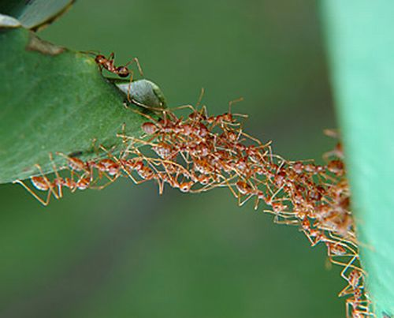

Working in groups can accomplish Great things.
- From a young age we teach teamwork
- When we get a bit older, we call it "collaboration"
- Eventually, we're trying to sell it as "synergy"


Group work is no panacea
Brooks reported that adding people to a late project only made it later.
Groups are complex
Sometimes a group that we view as nearly hopeless, manages to succeed.
Other time groups that are certain to succeed, ultimately fail.
Why?
What are the effects of varied transparency on idea generation in groups?
Why groups succeed or fail is a HUGE, complex problem.
Let's eat the elephant one byte at a time.
Overview of Related Work
In order to examine my Research Question, I reviewed the literature in four areas:
- Idea Generation in Groups
- Privacy
- Coordination
- Theory-Practice Gap
Related: Idea Generation in Groups
- Generating ideas in groups is less effective than individually
- Number of ideas generated
- Quality of ideas generated
- Even with trained collaborators
Related: Idea Generation in Groups (cont'd.)
Electronic Brainstorming
- production blocking
- social inhibition
- accountability
Related: Privacy
The concept of privacy has evolved to encompass the increasing portion of our lives lived online including
- work
- (social) networking
- play
- shopping
- love

Related: Privacy (cont'd.)
- privacy in the form of anonymity has helped alleviate social inhibition
- anonymity also harms accountability
- solitude facilitates our work on creative tasks
Related: Micro-coordination
"In successful discussions, participants have the means or instrumentality to coordinate and adjust the activity to meet their needs."
Related: Micro-coordination (cont'd.)
To facilitate participant discussion, and to provide a means for them to refer to objects in the system is to provide the participants with coordinative agency.
Related: Theory-Practice Gap
Many fields face challenges in implementing research findings in practice.
Even though there is overwhelming evidence that generating ideas in groups is less effective, it remains popular and desirable.
Related: Theory-Practice Gap (cont'd.)
Participatory Design gives us Design Games!
- rules for engaging with each other
- addresses social inhibition
- addresses accountability
- turn-taking
- production blocking
- artifacts
Related Work: The User Game
- Pile of pictures on a table
- Empty playing area
- Take turns
- place pictures
- tell User story/
Related Work: Summary
- idea generation in groups
- privacy
- coordination
- theory-practice gap
What are the effects of varied transparency on idea generation in groups?
Overview of Study Design
- Software Development
- Photography
- Data Collection
Related: Idea Generation in Groups
- Generating ideas in groups is less effective than individually
- Number of ideas generated
- Quality of ideas generated
- Even with trained collaborators
Related: Idea Generation in Groups (cont'd.)
Electronic Brainstorming
- production blocking
- social inhibition
- accountability
Related: Privacy
The concept of privacy has evolved to encompass the increasing portion of our lives lived online including
- work
- (social) networking
- play
- shopping
- love
Related: Privacy (cont'd.)
- privacy in the form of anonymity has helped alleviate social inhibition
- anonymity also harms accountability
- solitude facilitates our work on creative tasks
Related: Micro-coordination
"In successful discussions, participants have the means or instrumentality to coordinate and adjust the activity to meet their needs."
Related: Micro-coordination (cont'd.)
To facilitate participant discussion, and to provide a means for them to refer to objects in the system is to provide the participants with coordinative agency.
Related: Theory-Practice Gap
Many fields face challenges in implementing research findings in practice.
Even though there is overwhelming evidence that generating ideas in groups is less effective, it remains popular and desirable.
Related: Theory-Practice Gap (cont'd.)
Participatory Design gives us Design Games!
- rules for engaging with each other
- addresses social inhibition
- addresses accountability
- turn-taking
- production blocking
- artifacts
Related Work: The User Game
- Pile of pictures on a table
- Empty playing area
- Take turns
- place pictures
- tell User story/
Related Work: Summary
- idea generation in groups
- privacy
- coordination
- theory-practice gap
What are the effects of varied transparency on idea generation in groups?
Title
Content for the slide goes right in here oh yeah, just type it in there, awesome.
Title
Content for the slide goes right in here oh yeah, just type it in there, awesome.
Title
Content for the slide goes right in here oh yeah, just type it in there, awesome.